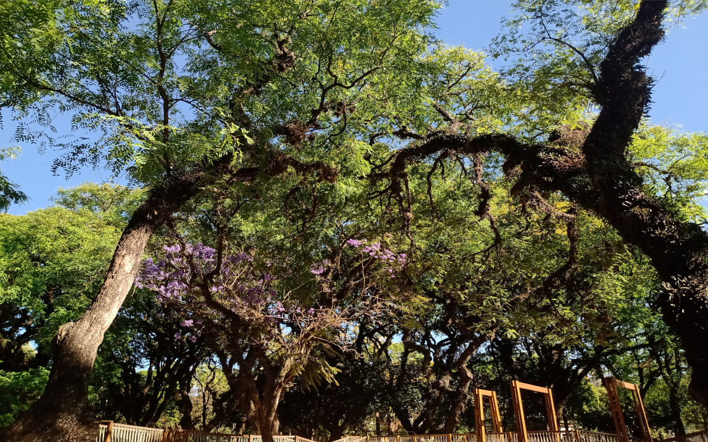

confira alguns fatos interessantes e aleatorios que no final não serve para nada
começaremos pela palavra curiosidades
"Curiosidade é uma palavra originada do latim curiositas, que significa “desejo por conhecimento” ou “desejo por informação”. A curiosidade, característica presente nos seres humanos e em outros animais, é capaz de promover o aprendizado e o desenvolvimento de habilidades."
- As baratas existem há 120 milhões de anos, antes mesmo dos dinossauros vagarem pela Terra.
- As abelhas podem picar outras abelhas – geralmente se se sentirem ameaçadas ou se estiverem protegendo seu território.
- Quando criança, Adolf Hitler queria ser padre. Ele também sofria de Ailurofobia, que é o medo de gatos
- "A cada minuto, cerca de 72 horas de conteúdo são enviadas ao site de vídeos Youtube."
- "Estima-se que, a cada ano, o monte Everest cresça 4 milímetros."
- "A barragem da maior usina hidrelétrica do mundo, a Usina das Três Gargantas, localizada na China, prolongaria a duração do dia em 0,66 microssegundos se operasse em sua capacidade máxima. Isso ocorreria em virtude da enorme massa de água que ela comporta."
- Uma cervejaria no Canadá fabrica cerveja usando água de icebergs de 20.000 anos.
- A qualquer momento, há aproximadamente 2.000 tempestades acontecendo na Terra.
- Como os humanos, os coalas possuem impressões digitais individuais únicas.
- "Durante o fenômeno Superlua, calcula-se que o diâmetro lunar possa aumentar em até 14%."
- "Há uma lâmpada que permanece ligada continuamente há mais de 113 anos na cidade de Livermore, na Califórnia."
- "O cérebro humano é formado por, aproximadamente, 75% de água."
- Em média, uma pessoa anda o equivalente a três vezes ao redor do mundo na vida.
- O núcleo da Terra é tão quente quanto a superfície do Sol.
- A Rota 66 é mais longa que a distância até o centro da Terra.
- "O cachorro-quente é uma invenção alemã do século XV.
- "Alguns animais, como os cangurus, não param de crescer mesmo atingindo a idade adulta.
- "A maioria das vacas não consegue descer escadas.
- A Islândia cresce 5 centímetros por ano por causa de suas placas tectônicas em movimento.
- O deserto do Saara pode atingir até 136 graus.
- Um milhão de terras caberiam dentro do sol.
- "Em média, um adulto respira 550 litros de oxigênio puro diariamente.
- "Estima-se que 4% da população mundial seja canhota.
- "A maior palavra da língua portuguesa refere-se a uma doença causada pela respiração de cinzas vulcânicas: pneumoultramicroscopicossilicovulcanoconiótico. 
- Os arrepios que você sente ao ouvir música são causados pelo fato de seu cérebro liberar dopamina.
- A Austrália é mais larga que a lua.
- O casamento do príncipe Charles com a falecida princesa Diana atraiu quase 750 milhões de telespectadores em todo o mundo.
- "O Brasil é o país que possui a maior comunidade japonesa fora do Japão. Só em São Paulo, moram mais de 600 mil japoneses."
- "O calendário da Etiópia é sete anos atrasado em relação aos demais países do ocidente."
- "A avenida mais larga do mundo, com 14 faixas diferentes, fica na Argentina.
- Um terremoto de magnitude 12 dividiria a Terra ao meio.
- A maior abóbora do mundo pesa mais do que um carro esportivo.
- O coração de um camarão está localizado em sua cabeça.
- "Mais de 10% de toda a biodiversidade do mundo é encontrada no continente australiano.
- "A Rússia é o maior país do mundo, ocupando cerca de 10% de toda a terra do planeta.
- "Na Holanda, estima-se que o número de bicicletas ultrapasse três vezes o número de veículos.
- A Terra não é exatamente redonda. A rotação e a gravidade causaram um leve achatamento. Essa forma é chamada geoide.
- Cabo de guerra costumava ser um esporte olímpico.
- A Finlândia é o país mais feliz do mundo , de acordo com o Relatório de Felicidade Mundial de 2019.
- "O menor país do mundo é o Vaticano, com cerca de 800 habitantes oficiais.
- "O Sol converte cerca de 600 milhões de toneladas de hidrogênio em hélio a cada segundo em virtude do processo de fusão nuclear.
- "Um volume do tamanho da cabeça de um alfinete feito do material de uma estrela de nêutrons teria uma massa de 1 milhão de toneladas."
- Os grãos de baunilha são produto da única orquídea frutífera do mundo, a Vanilla planifolia.
- Mamutes lanosos ainda estavam vivos quando as pirâmides foram construídas.
- Antigamente, as cenouras eram roxas e não laranjas.
- "A parte mais profunda do oceano chega a 11 mil metros.
- "O esqueleto humano é formado por 206 ossos, no entanto, os bebês nascem com cerca de 270 ossos, que se fundem em ossos maiores.
- "A Terra orbita o Sol a uma velocidade de, aproximadamente, 107 mil km/h.
- A ‘Ilha das Cobras’ ou Ilha da Queimada Grande fica em São Paulo, no Brasil e tem 4.000 cobras. Portanto, é uma das ilhas mais mortíferas do mundo.
- Há um bilhão de micróbios em uma colher de chá de solo.
- Homens têm 6 vezes mais probabilidade de serem atingidos por raios do que mulheres.
- "O corpo humano tem mais de 96 mil km de vasos sanguíneos.
- "Estima-se que o Universo conte com mais de 10 bilhões de galáxias.
- "A luz do Sol leva cerca de 8 minutos e 20 segundos para chegar à Terra.
- Você não pode roncar e sonhar ao mesmo tempo.
- É fisicamente impossível para os porcos olharem para o céu.
- Em média, uma pessoa passa 6 meses de sua vida parada no semáforo, esperando a luz vermelha ficar verde.
- "O dia tem, aproximadamente, 23 horas e 56 minutos, não 24 horas. Por isso, a cada quatro anos, adicionamos um dia ao mês de fevereiro. Esses anos são chamados de bissextos.
- "O recorde de voo de uma galinha é de 13 segundos.
- "Os mosquitos são os animais mais letais do mundo, causando mais mortes humanas do que todas as guerras da história. Esses seres vivos matam cerca de 725 mil humanos anualmente.